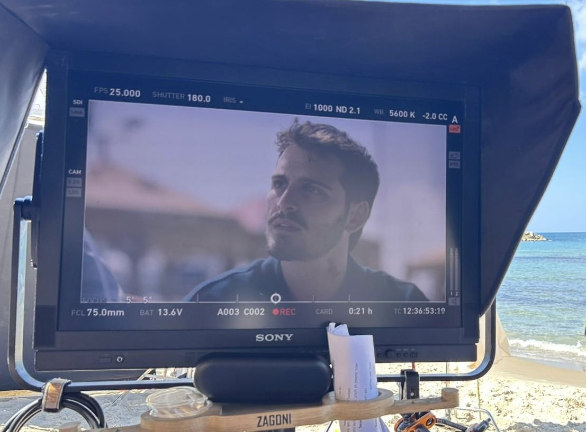
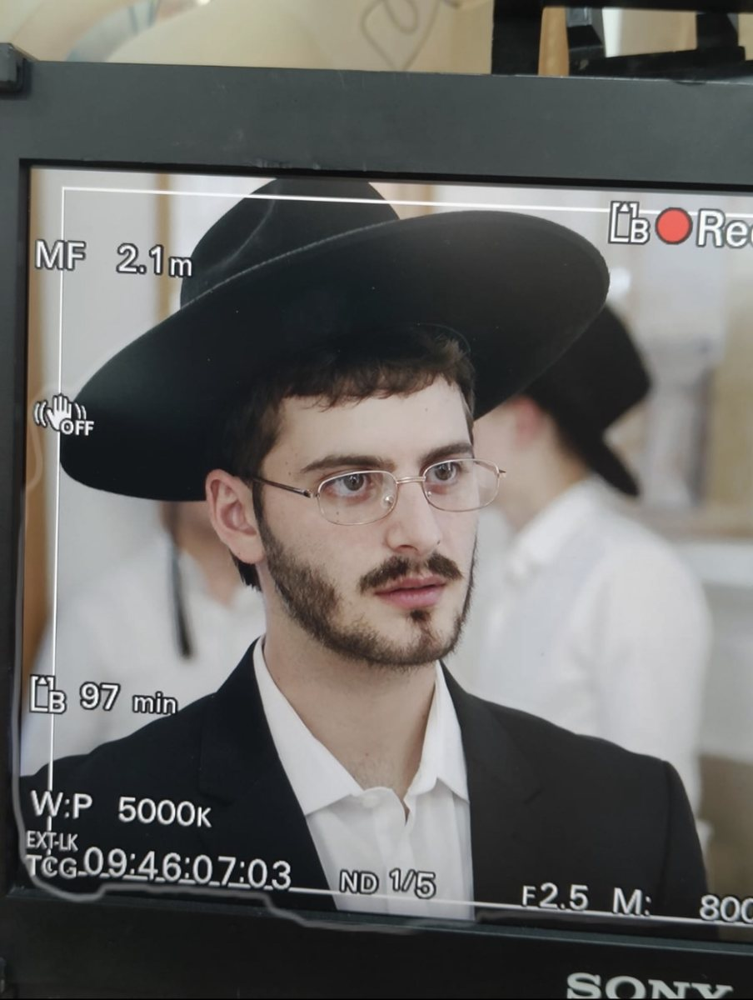
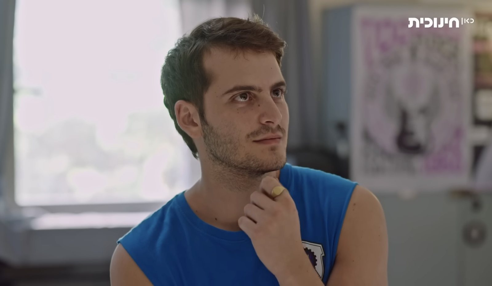
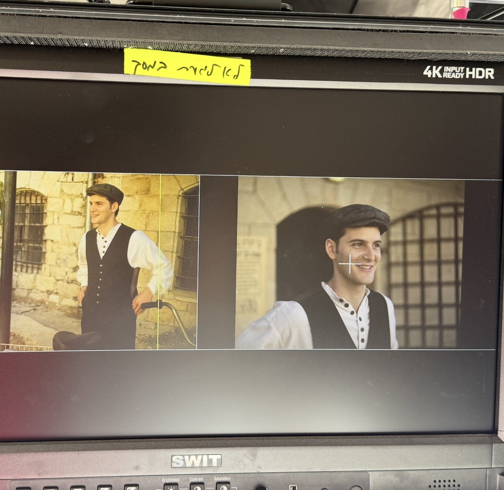
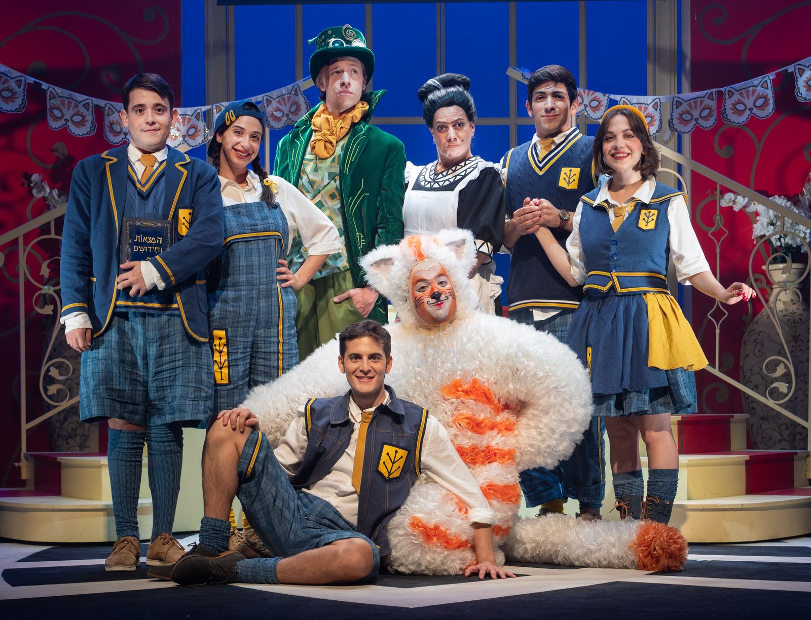

חופש אמיתי נוצר בתוך גבולות.
זה כל ההבדל בין שחקן שמנחש לשחקן שיודע. סדנאות משחק מול מצלמה בשיטת "בחירה חופשית" — כדי שהאודישן הבא כבר לא יהיה מפחיד. הוא יהיה הזדמנות.

יואב רוזנברג. שחקן, מנחה סדנאות ומלווה שחקנים.
בחרו את המסלול שלכם
ארבעה מסלולים, שיטה אחת — מותאמת לכל שלב בדרך.
הקורס השנתי
נוער 14–17 | בוגרים 18+ · אוק'–יוני
חדר כושר לשחקנים. ההזדמנות למצוא את טביעת האצבע שלך בעולם המשחק.
לעמוד המסלולסדנת "בחירה חופשית"
נוער 14–17 | בוגרים 18+
8 מפגשים | טכניקה, ניתוח סצנות, עבודה מול מצלמה, הכנה לאודישנים וקהילה שמלווה אתכם.
לעמוד המסלולסדנה אחד על אחד
כל גיל · 5 מפגשים
תהליך אישי לחלוטין — כלים פרקטיים, חיזוק מנטלי ותוכנית שנבנית בדיוק בשבילך.
לעמוד המסלולהכנה לאודישן
כל גיל ורמה · פגישה אחת
ניתוח טקסט, צילום אודישן מקצועי וקולנועי ומציאת הייחוד שלכם.
לעמוד המסלולללמוד משחקן עובד.










"חופש אמיתי נוצר בתוך גבולות. ככל שהכלים מדויקים יותר — כך יש יותר מקום לאמת."
תלמידים מספרים.
עכשיו התור שלכם.
כתבו לי כמה מילים על איפה אתם נמצאים — ואחזור אליכם עם כל הפרטים, בלי בלה בלה.
תגובה מהירה · ללא התחייבות